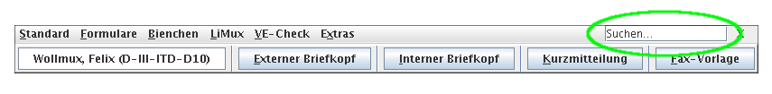
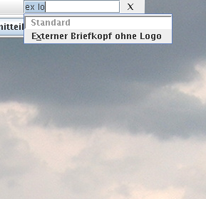

Die WollMuxBar ist eine Leiste, die über Menüs und Buttons Zugriff auf Vorlagen und WollMux-Funktionen bietet.
Installation
Die WollMuxBar wird ausgeliefert als JAR-Datei WollMuxBar.jar. Diese JAR-Datei kann an einen beliebigen Ort kopiert werden. Weiteres erfahren Sie auf den Seiten WollMux downloaden und WollMux installieren.
Konfiguration
Die WollMuxBar liest ihre Konfiguration aus 2 Dateien. Zuerst liest sie
die Konfigurationsdatei
wollmux.conf, danach liest
sie die Datei $HOME/.wollmux/wollmuxbar.conf, wobei $HOME unter
Windows dem Profilverzeichnis des Benutzers entspricht.
Konfigurationseinstellungen aus der wollmuxbar.conf haben Vorrang.
In die Datei wollmuxbar.conf schreibt die WollMuxBar auch die
Änderungen, die mittels
Menü-Manager und
Optionen-Dialog getätigt
werden.
Über die Konfigurationsoption ALLOW_USER_CONFIG
der Datei wollmux.conf kann die Auswertung der Datei wollmuxbar.conf
bei Bedarf zentral unterbunden werden. In diesem Fall stehen dann auch
die beiden Funktionen
Menü-Manager und
Optionen-Dialog nicht mehr zur
Verfügung.
Aufruf
Linux
Wenn Sie das auf WollMux downloaden zur Verfügung gestellte Skript wollmuxbar in den Pfad Ihres Systems aufgenommen haben, so lässt sich die WollMuxBar einfach als wollmuxbar bzw. (mit vollständigem Pfad z.B.) /usr/bin/wollmuxbar aufrufen.
Windows
Der Aufruf erfolgt mittels
"<vollständiger Pfad zur Java-Installation>\javaw.exe" -jar "<vollstdg. Pfad zum WollMuxBar-Verzeichnis>\WollMuxBar.jar"
Hinweis: Beachten Sie die Verwendung von javaW.exe statt java.exe. Dies verhindert, dass ein "DOS-Fenster" aufgeht.
Mehrere Javaversionen auf einem PC
Wenn mehrere Javaversionen auf einem PC benötigt werden, kann über ein Skript die Javaversion zum Starten der WollMuxBar festgelegt werden. Die Festlegung gilt nicht für das Plugin WollMux.uno.pkg
Beispiel:
@echo off
set "JAR_FILE=<Pfad>\WollMuxBar.jar"
set JAVA_HOME=C:\Programme\Java\<Java_Version>
set PATH=%JAVA_HOME%\bin;%PATH%
start "WollMuxBar" javaw -jar "%JAR_FILE%" %1 %2 %3 %4 %5 %6 %7 %8
wollmuxbar.exe
Alternativ zum Starten der WollMuxBar mit javaw.exe kann die mitgelieferte Datei wollmuxbar.exe ausgeführt werden. Dafür muss sich diese Datei im selben Verzeichnis wie die Datei WollMuxBar.jar befinden.
Die wollmuxbar.exe sucht beim Ausführen automatisch nach einer auf dem System vorhandenen Java-Installation an den folgenden Orten in der angegebenen Reihenfolge:
- im Unterverzeichnis jre des Verzeichnisses, in dem sich die wollmuxbar.exe befindet
- in dem Verzeichnis, das im Wert "JavaHome" des Registrierungsschlüssels "HKEY_CURRENT_USER\Software\WollMux" angegeben ist
- in dem Verzeichnis, das im Wert "JavaHome" des Registrierungsschlüssels "HKEY_LOCAL_MACHINE\Software\WollMux" angegeben ist
- in dem Verzeichnis, das in der JAVA_HOME Umgebungsvariable angegeben ist
- in dem Verzeichnis, das laut der von Java selbst angelegten Registrierungsschlüssel die aktuelle Java-Version auf dem System beherbergt
Wenn Sie also selbst festlegen wollen, welche Java-Installation für das Ausführen der WollMuxBar verwendet wird, tun Sie dies am besten über den Wert "JavaHome" im entsprechenden WollMux-Registrierungsschlüssel.
Der wollmuxbar.exe können beim Aufruf alle unten beschriebenen Kommandozeilen-Argumente übergeben werden.
LibreOffice
Der WollMux und die WollMuxBar können grundsätzlich auch zusammen mit LibreOffice verwendet werden. Dazu muss allerdings der ClassLoader der WollMuxBar angepasst werden, da dieser standardmäßig die UNO-Installation von LibreOffice nicht findet.
Es gibt zwei Methoden um der WollMuxBar beim Start mitzuteilen, wo LibreOffice installiert ist:
- Beim Aufruf von JAVA kann die Systemvariable com.sun.star.lib.loader.unopath über den Parameter -D übergeben werden.
$ java -Dcom.sun.star.lib.loader.unopath=/opt/libreoffice/program WollMuxBar.jar
- Vor dem Start wird die Envionmentvariable UNO_PATH gesetzt
$ export UNO_PATH=/opt/libreoffice/program
Weitere Informationen darüber, wie der ClassLoader die UNO-Installation sucht, befinden sich hier.
Kommandozeilen-Argumente
Der WollMuxBar können diverse Kommandozeilenargumente übergeben werden.
--mm
Ruft nach dem Start der WollMuxBar sofort den Menü-Manager auf. So kann man den Menü-Manager auch dann aufrufen, wenn für ihn kein Menüpunkt in der WollMuxBar eingerichtet wurde oder sogar wenn noch gar keine WollMuxBar-Konfiguration vorhanden ist.
--quickstarter
Lässt die WollMuxBar als OOo-Quickstarter agieren, d.h. OOo bleibt permanent im Hintergrund im Speicher, auch wenn das letzte Fenster geschlossen wurde.
--minimize
Startet die WollMuxBar im Minimize-Modus.
--topbar
Startet die WollMuxBar im AlwaysOnTop-Modus.
--normalwindow
Startet die WollMuxBar im Window-Modus.
--load
Der folgende Aufruf
wollmuxbar --load <Datei>
öffnet <Datei> als Vorlage (d.h. es wird ein neues "UnbenanntX" Dokument erstellt), unabhängig davon, ob es sich um eine ODT/DOC oder OTT/DOT Datei handelt. Besonderheit hierbei ist, dass das Popup zum Ausfüllen von Formularfeldern (nicht zur Verwechseln mit der Formular-GUI des WollMux!) hier nicht erscheint. Das Verhalten ist also so als wäre die Vorlage aus der WollMuxBar heraus geöffnet worden.
Verknüpfen der Datei-Erweiterung .ott im Konqueror mit wollmuxbar --load
Damit bei Doppelklick auf eine OTT-Datei im Konqueror diese mit wollmuxbar --load gestartet wird (zum Unterdrücken des Standard-Formular-Popups) sind folgende Schritte durchzuführen:
- Konqueror öffnen
- Einstellungen/Konqueror einrichten
- Fenster auf Vollbild maximieren
- In der vertikalen Leiste links "Dateizuordnungen" auswählen.
- In der Baum-Ansicht rechts "application" expandieren
- "vnd.oasis.opendocument.text-template" auswählen
- Unter "Rangfolge der zugeordneten Anwendungsprogramme" "OpenOffice Writer" selektieren und den "Entfernen" Knopf drücken
- Mit "OK" den Einstellungen-Dialog beenden.
- Jetzt auf eine OTT-Datei doppelklicken
- Es erscheint die Abfrage mit welcher Anwendung die Datei geöffnet werden soll.
- wollmuxbar --load eingeben
- Checkbox "Programm diesem Datentyp fest zuordnen" ankreuzen
- OK
Verknüpfen der Datei-Erweiterung .ott im Windows Explorer mit wollmuxbar --load
Damit bei Doppelklick auf eine OTT-Datei im Windows Explorer diese mit wollmuxbar --load gestartet wird (zum Unterdrücken des Standard-Formular-Popups) sind folgende Schritte durchzuführen:
- Explorer öffnen
- Extras/Ordneroptionen/Reiter "Dateitypen"
- In der Liste OTT auswählen
- Button "Erweitert" drücken
- In der "Vorgänge" Liste "new" auswählen und Button "Bearbeiten"
Bei Anwendung für diesen Vorgang folgendes eintragen:
"<Pfad zur Java-Installation>/javaw.exe" -jar "<Pfad zum WollMuxBar-Verzeichnis>/WollMuxBar.jar" --load "%1"Beachten Sie die Anführungszeichen "..." um die Pfade herum, sowie um das "%1" herum. Diese sind wichtig, damit Pfade und Dateinamen mit enthaltenen Leerzeichen funktionieren.
Beachten Sie außerdem die Verwendung vonjavaW.exe, nichtjava.exe. Dies sorgt dafür, dass kein "DOS-Fenster" aufgeht.OK, OK, Schließen
Wenn Sie die wollmuxbar.exe verwenden, kann Schritt 6 alternativ auch so aussehen:
Bei Anwendung für diesen Vorgang folgendes eintragen:
"<Pfad zur wollmuxbar.exe>/wollmuxbar.exe" --load "%1"Beachten Sie die Anführungszeichen "..." um die Pfade herum, sowie um das "%1" herum. Diese sind wichtig, damit Pfade und Dateinamen mit enthaltenen Leerzeichen funktionieren.
--fifo und --firstrun
Verfügbar ab WollMux 11.9
Schalter --fifo <Fifo-Pipe-Datei>
Mit dem Schalter --fifo <Fifo-Pipe-Datei> kann erreicht werden, dass das Fenster der WollMuxBar nicht mehrfach gestartet wird wenn die WollMuxBar mehrfach aufgerufen wird. Die zu erst gestartete WollMuxBar stellt dabei den Hauptprozess der WollMuxBar dar. Alle später getätigten Aufrufe der WollMuxBar führen dazu, dass die mitgegebenen Aufrufsparameter über die FIFO-Pipe <Fifo-Pipe-Datei> an den Hauptprozes weiter geleitet und von diesem ausgeführt werden.
Dabei hat die WollMuxBar folgendes Vorgehen:
- Beim Starten einer WollMuxBar mit dem Schalter --fifo versucht diese
zunächst, ihre Argumentenliste über die fifo-Pipe an einen
Hauptprozess weiter zu leiten.
- Existiert bereits ein Hauptprozess, und nimmt dieser die Argumentenliste innerhalb von 2 Sekunden entgegen, so beendet sich die (neu erstellte) WollMuxBar sofort. Die Argumente werden in diesem Fall durch den Hauptprozess ausgeführt, der ein bestehendes Fenster der WollMuxBar schließt und mit den angenommenen Argumenten neu erzeugt.
- Läuft der Timeout von 2 Sekunden ab, ohne dass ein Hauptprozess die Argumentenliste entgegen nimmt, so wird das Fenster der WollMuxBar mit den übergebenen Argumenten gestartet und der aktuelle Prozess selbst wird zum Hauptprozess, der wiederum Anfragen später getätigter WollMuxBar-Aufrufe entgegen nehmen kann.
- Beim Beenden des Hauptprozesses wird auch die Fifo-Datei gelöscht, damit der nächste Aufruf der WollMuxBar über den Schalter --firstrun beschleunigt werden kann.
Das Argrument <Fifo-Pipe-Datei> muss auf eine bereits existierende (über das Betriebssystem erstellte) fifo-Pipe verweisen. Unter Linux kann eine solche fifo-Datei z.B. mit dem Kommando "mkfifo <Fifo-Pipe-Datei>" erzeugt werden. Existiert die Fifo-Pipe-Datei nicht, oder ist sie nicht lesbar, so bricht die WollMuxBar mit einer Fehlermeldung ab.
Schalter --firstrun
Der Schalter --firstrun wird nur im Zusammenhang mit dem Schalter --fifo ausgewertet und sorgt dafür, dass die aktuelle WollMuxBar direkt zum Hauptprozess wird, ohne vorangehende Prüfung, ob bereits ein Hauptprozess existiert und auf die Fifo-Pipe-Datei lauscht.
Hinweis: Der Schalter --load wird unabhängig von den Schaltern --fifo und --firstrun immer sofort durch den Prozess der neu aufgerufenen WollMuxBar ausgeführt.
Die Wrapperskripte wollmuxbar bzw. wollmux für Linux/Unix-Systeme machen bereits korrekt von den Schaltern --fifo bzw. --firstrun gebrauch. Wenn Sie diese Skripte verwenden, gibt es keine Notwendigkeit, diese beiden Schalter per Hand zu benutzen.
Menü-Manager
Der Menü-Manger ist ein interaktives Tool zum Bearbeiten der WollMuxBar-Menüstruktur. Er wird aufgerufen, indem die WollMuxBar mit dem Parameter --mm gestartet wird, oder indem ein in der WollMuxBar vorhandenes Menü-Elemente mit der ACTION "menuManager" ausgewählt wird.
Der Menümanager verfolgt einen ähnlichen Zweck wie der derzeit in der
LHM etablierte automux-Mechanismus zur Steuerung der Inhalte der
WollMuxBar. Es ist aktuell unklar, ob der Menümanager den
automux-Mechanismus zukünftig ablösen wird und es gibt noch kein
durchgängiges Konzept dafür, wie die Pflege einer zentral
bereitgestellten WollMuxBar in diesem Fall erfolgen kann. Der
Menümanager ist aus diesem Grund als experimentell eingestuft und wird
standardmäßig nicht in der WollMuxBar angezeigt. Für
Evaluierungszwecke oder kleine Administrationseinheiten, die auf eine
zentrale WollMuxBar-Konfiguration verzichten möchten, kann der
Menümanager mit --mm oder der
wollmux.conf-Option ALLOW_MENUMANAGER
jedoch temporär oder dauerhaft aktiviert werden. Es ist möglich, dass
sich die Voreinstellung für die Option ALLOW_MENUMANAGER zukünftig
ändert.
Bedienung

Der Menü-Manager stellt die komplette Menü- und Buttonleiste der WollMuxBar als Baum dar. Die Darstellung und Bedienung ist dabei ähnlich wie sie aus gebräuchlichen Dateimanagern bekannt ist. In der Baum-Ansicht können Einträge, die Untereinträge enthalten, durch Linksklick "ausgeklappt" werden. Zudem selektiert ein Linksklick den Eintrag, auf dem sich der Mauscursor befindet. Individuelle Mehrfachselektion durch Halten der Strg-Taste beim Anklicken sowie Listenselektion mittels gedrückter Umschalttaste werden unterstützt. Selektierte Einträge können per Drag'n'Drop im Baum hin und hergezogen werden. Wird dafür nur die linke Maustaste verwendet, werden die Einträge verschoben. Wird die Strg-Taste gedrückt gehalten, so werden sie kopiert.
Eine Ausnahme von diesem Verhalten bilden Favoriten-Menüs (das sind Menüs, die durch das Attribut FAVO "1" gekennzeichnet sind). In diesem Fall wird beim Ziehen von Inhalten in das Favoritenmenü hinein immer kopiert, auch wenn Strg nicht gedrückt ist. Innerhalb des Favoritenmenüs wird wie üblich verschoben. Ein Benutzer, der den Menü-Manager nur benutzt um sein Favoritenmenü zu pflegen, benötigt die Strg-Taste also nicht.
Der Rechts-Klick auf einen Eintrag im Menü-Manager selektiert diesen und lässt ein Popup-Menü erscheinen, das identisch zum Menü "Bearbeiten" der Menüleiste ist.
Einträge im Menü-Manager, die mit einem Sternchen markiert sind, sind
solche, die aus der Datei .wollmux/wollmuxbar.conf stammen (siehe auch
die Beschreibung des Befehls Speichern im Menü
"Datei"). D.h. es sind
Einträge, die der Benutzer im Vergleich zur Vorkonfiguration des
Administrators
(wollmux.conf) geändert
bzw. hinzugefügt hat. Zu beachten ist, dass z.B. das Ändern des Labels
eines Menüeintrages das Sternchen nicht bei diesem Eintrag sondern beim
enthaltenden Menü setzt. Das liegt daran, dass immer nur ganze Menüs,
nicht jedoch einzelne Einträge, in der Benutzerdatei wollmuxbar.conf
überschrieben werden können. Das Ändern eines einzigen Eintrages im
Menü-Manager bewirkt also, dass ALLE zukünftigen Änderungen, die
innerhalb der wollmux.conf vorgenommen werden und das Menü betreffen,
in dem sich dieser Eintrag befindet, nicht mehr beim Benutzer ankommen,
da die wollmuxbar.conf immer Vorrang hat.
Ist ein Menüeintrag mit CONF_ID Attributen versehen, so werden diese in eckigen Klammern der Bezeichnung dieses Eintrags vorangestellt.
Menü "Datei"
Speichern : Schreibt die Einstellungen aller Leisten und Menüs (sowie eventuell angelegte CONF_IDs), die gegenüber den Einstellungen der zentralen Konfigurationsdatei wollmux.conf geändert sind (diese tragen in der Baumanzeige ein Sternchen) in die Datei wollmuxbar.conf.
Die wollmuxbar.conf wird im Verzeichnis /.wollmux/ erstellt (bzw. überschrieben, wenn sie schon vorhanden ist), wobei C:\Dokumente und Einstellungen\
Der Menü-Manager lässt beim Speichern in die wollmuxbar.conf bereits in der Datei vorhandene Konfigurationsabschnitte in Ruhe, die ihn nicht betreffen. Die Datei wird jedoch in jedem Fall neu aufgebaut, d.h. manuell in die Datei eingefügte Formatierungen und Kommentare gehen beim Speichern immer verloren.
Ein Workflow zur Verwendung des Menü Managers zur Pflege der zentralen WollMux-Konfiguration wäre z.B. dass ein Administrator die Datei wollmuxbar.conf über den Menü-Manager in seinem .wollmux-Verzeichnis erstellen lässt und dann in die zentrale Konfiguration kopiert.
Exportieren...: Schreibt die Einstellungen aller Leisten und Menüs (sowie die CONF_IDs) in die ausgewählte Datei. Im Gegensatz zum normalen Speichern werden beim Exportieren nicht nur die Einstellungen gespeichert, die sich gegenüber den Einstellungen der zentralen Konfigurationsdatei wollmux.conf unterscheiden, sondern wirklich sämtliche Einstellungen der Leisten und Menüs (und CONF_IDs). Falls als Zieldatei für den Export eine vorhandene Datei ausgewählt wird, so wird diese komplett überschrieben.
Ein Workflow zur Verwendung des Menü Managers zur Pflege der zentralen WollMux-Konfiguration wäre z.B. dass ein Administrator über die Export-Funktion eine Konfigurationsdatei erstellt und diese dann in die zentrale Konfiguration kopiert.
Schließen: Schließt den Menü-Manager.
Falls Änderungen am Menü vorgenommen wurden, erfolgt eine Abfrage, ob zuerst gespeichert werden soll. Nach dem Schließen des Menü-Managers startet sich die WollMuxBar auf jeden Fall neu und spiegelt damit die aktuelle Menüstruktur wieder.
Menü "Bearbeiten"
Das Menü "Bearbeiten" steht auch als Popup zur Verfügung bei Rechts-Klick auf einen Eintrag in der Baumansicht des Menü-Managers.
Bearbeiten... : Ruft einen Dialog zum Bearbeiten der Attribute des gewählten Menüelements auf (bei Mehrfachselektion des ersten gewählten Elements).
Die jeweils angezeigten Attribute variieren je nach Art des Menüelements - immer vorhanden sind jedoch TYPE und LABEL. Eine ausführliche Dokumentation der möglichen Attribute findet sich in der Dokumentation der Konfigurationsdatei wollmux.conf im Abschnitt "Menues und Symbolleisten".
Das Bearbeiten von Buttons mit der ACTION "open" wird derzeit nicht unterstützt!
Haupteinsatzzweck dieses Dialogs ist die Bearbeitung der Label der Menüeinträge. Zweiter wichtiger Einsatzzweck ist das Erstellen von Spezialeinträgen des Typs "button", die bestimmte Aktionen auslösen. Weniger wichtiger Einsatzzweck ist das Einfügen von "glue" und "senderbox" Elementen.
Standard wiederherstellen: Hebt von allen selektierten Menüs und deren Untermenüs die Änderungen des Benutzers im Vergleich zur wollmux.conf auf. Es erfolgt vorher eine Sicherheitsabfrage.
Neues (Unter)Menü: Erstellt im ersten selektierten Menü bzw. vor dem ersten selektierten Menüeintrag ein neues Untermenü. Es erfolgt eine Abfrage des Namens des neuen Menüs. Dieser kann nachträglich natürlich auch noch über Bearbeiten... geändert werden.
Neue Datei(en): Fügt am Ende des ersten selektierten Menüs bzw. wenn kein Menü selektiert wurde vor dem ersten selektierten Menüeintrag neue Menüeinträge zum Öffnen von Dateien (typischerweise von ODF-Vorlagen, insbes. von WollMux-Formularen) hinzu. Es erscheint ein Dateiauswahl-Dialog, in dem eine Mehrfachauswahl möglich ist.
Dem Speicherort der Dateien kommt eine besondere Bedeutung zu. Dateien, die sich im Verzeichnisbaum unterhalb des in der WollMux-Konfiguration festgelegten DEFAULT_CONTEXTs befinden (Dieser bezeichnet typischerweise das Oberverzeichnis der WollMux-Konfiguration, also des Verzeichnisses, das die Unterverzeichnisse plugins, conf, vorlagen und scripts enthält), werden mit relativen URLs kodiert. Entsprechende Menüeinträge sind später auch bei anderen Benutzern und unter anderen Betriebssystemen lauffähig, auch wenn die ganze Konfiguration in ein anderes Verzeichnis oder gar auf einen Server kopiert wird.
Dateien, die sich im Verzeichnisbaum nicht unterhalb des DEFAULT_CONTEXTs, aber unterhalb des Benutzerverzeichnisses (unter Linux: /home/C:\Dokumente und Einstellungen\
Für alle anderen Speicherorte werden absolute URLs (file:) verwendet. Diese funktionieren in der Regel nur auf einem Rechner für einen einzigen Benutzer und sollten vermieden werden.
Über Bearbeiten... lässt sich die URL nachträglich ansehen und ändern.
Neuer Separator: Fügt vor dem ersten selektierten Element einen Separator ein.
Neues ...: Fügt in das erste selektierte Menü bzw. vor dem ersten selektierten Menüeintrag einen neuen unbeschrifteten Button ein und öffnet sofort den Bearbeiten...-Dialog für diesen Button.
Löschen: Löscht alle selektierten Elemente ohne Rückfrage!
Menü "CONF_IDs"
Hinzufügen→<conf_id>: Fügt allen selektierten Elementen das Attribut CONF_ID "<conf_id>" hinzu.
Rekursiv hinzufügen→<conf_id>: Fügt allen selektierten Elementen das Attribut CONF_ID "<conf_id>" hinzu. Sind unter den selektierten Elementen Menüs, so wird das Attribut auch allen in diesen Menüs enthaltenen Einträgen, Untermenüs, deren Einträgen, deren Untermenüs etc. hinzugefügt.
Entfernen→<conf_id>: Ist das Gegenstück zu Hinzufügen→<conf_id>.
Rekursiv entfernen→<conf_id>: Ist das Gegenstück zu Rekursiv hinzufügen→<conf_id>.
Liste bearbeiten: Ruft einen Dialog auf, der es erlaubt, die Liste der verfügbaren CONF_IDs zu pflegen. Zu jeder CONF_ID kann das Label bearbeitet werden, das im Optionen-Dialog der WollMuxBar im Abschnitt "Aktive Menügruppen" angezeigt wird.
Da die wollmuxbar.conf eines Benutzers zwar über ihren WollMuxBarKonfigurationen/Labels-Abschnitt die zu CONF_IDs gehörigen Labels ändern, jedoch keine in der zentralen Konfigurationsdatei wollmux.conf vorgegebenen CONF_IDs löschen kann, ist der "Löschen"-Button bei CONF_IDs, die aus der zentralen wollmux.conf kommen, ersetzt durch einen "Standard"-Button, der das Standardlabel wiederherstellt.
Optionen-Dialog
Über den Optionen-Dialog kann das Fensterverhalten eingestellt und es können die aktiven Menügruppen gewählt werden.
Über das Attribut CONF_ID können Menüs, Untermenüs, Buttons und alle anderen Bedienelemente der WollMuxBar einer oder mehreren Menügruppen zugeordnet werden. Ein Bedienelement wird nur dann angezeigt, wenn es entweder keiner einzigen Menügruppe zugeordnet ist, oder mindestens eine seiner Menügruppen im Optionen-Dialog unter "Aktive Menügruppen" ausgewählt ist.
Die WollMuxBar speichert Änderungen an den Optionen in der Datei
$HOME/.wollmux/wollmuxbar.conf, genauso wie der
Menü-Manager.
Suchleiste
Die WollMuxBar unterstützt eine Suchfunktion, mit der nach einzelnen Einträgen in den Menüs der WollMux-Leiste gesucht werden kann:

Bei dieser Funktion können Sie in das Feld "Suchen..." ein beliebiges Wort oder den Teil eines Wortes schreiben, nach dem gesucht werden soll. Alle Menüeinträge, die dieses Wort oder den Teil des Worts enthalten, erscheinen anschließend in der Trefferliste. Bei der Suche wird nicht auf die korrekte Groß-/Kleinschreibung geachtet. Desweiteren können Sie mit Leerzeichen verschiedene Suchbegriffe trennen. Es werden dann nur Menüeinträge angezeigt, die alle ihre Suchbegriffe enthalten.
Beispiel:

Nach Eingabe von "ex" erscheinen in der Trefferliste alle Menüeinträge, die den Textteil "ex" enthalten. Die Menüpunkte "Externer Briefkopf..." werden auch gefunden, obwohl sie mit einem großen "E" beginnen. Die ausgegrauten weißen Zeilen zeigen an, in welchen Menüs bzw. Untermenüs die Menüeinträge gefunden wurden.

Hier wurde die Suche nach "ex" ergänzt um einen weiteren Suchbegriff "lo". Es werden nur noch Menüeinträge angezeigt, die "ex" UND "lo" enthalten (Externer Briefkopf ohne Logo)
Aktivierung der Suchleiste in Ihrem Referat
Dieser Abschnitt ist ausschließlich für Administratoren relevant, die in Ihrem Referat die Konfiguration des WollMux betreuuen. Er beschreibt, wie die Suchleiste über die WollMux-Konfiguration aktiviert werden kann.
Voraussetzung für die Suchfunktion ist der Einsatz einer WollMux-Version
ab 6.3.1. Damit die Suchleiste in der WollMuxBar angezeigt wird, müssen
Sie in Ihre Konfiguration unter
<WurzelIhrerWollMux-Konfiguration>/vorlagen/<Standard, Blümchen, ...>
eine leere Datei mit dem Namen "<Nummer>.<Name>.searchbox" aufnehmen.
- Über die Nummer <Nummer> können Sie steuern, an welcher Stelle im Menü die Suchleiste angezeigt werden soll. Damit die Suchleiste wie im obigen Beispiel rechts oben vor dem "X"-Knopf angezeigt wird, musste im Falle der WollMux-Standard-Konfiguration der Wert 85 vergeben werden (zwischen 80.glue und 90.X.button)
- Über den Namen <Name> kann gesteuert werden, mit welchem Hinweistext die Suchleiste anfänglich belegt ist (z.B. "Suchen...").
Nachdem Sie die leere Datei angelegt haben, muss nur noch das Skript run_automux gestartet werden.
Dieses Vorgehen funktioniert erst ab (der nicht veröffentlichten) WollMux-Standard-Config Version 6.4.2. Wenn Sie in Ihrem Referat eine WollMux-Konfiguration mit kleinerer Versionsnummer verwenden, so können Sie die Suchleiste durch Einsatz des neuen automux-Skripts dennoch aktivieren. Kopieren Sie diese Datei einfach in das Verzeichnis <WurzelIhrerWollMux-Konfiguration>/scripts, bevor Sie run_automux aufrufen.
Wenn Sie die Suchleiste in Ihrer WollMux-Konfiguration aktiviert haben und diese Konfiguration mit einem alten WollMux nutzen (Versionsnummer kleiner 6.4.0), so wird bei jedem Start von OpenOffice.org eine ca. 1,6 kByte Fehlermeldung an das Ende der Datei ~/.wollmux/wollmux.log der Anwenderinnen und Anwender geschrieben. Die Datei wächst damit stetig an und wird durch den WollMux nicht gelöscht.